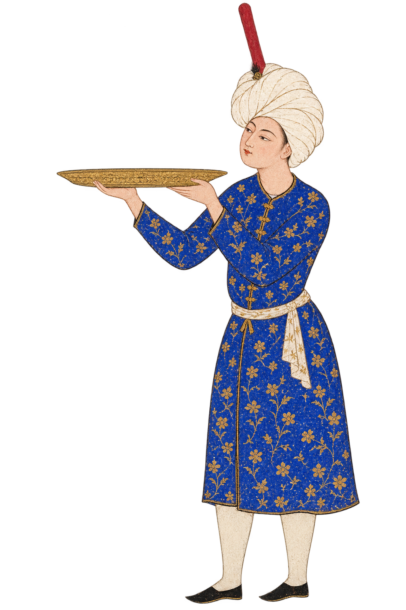
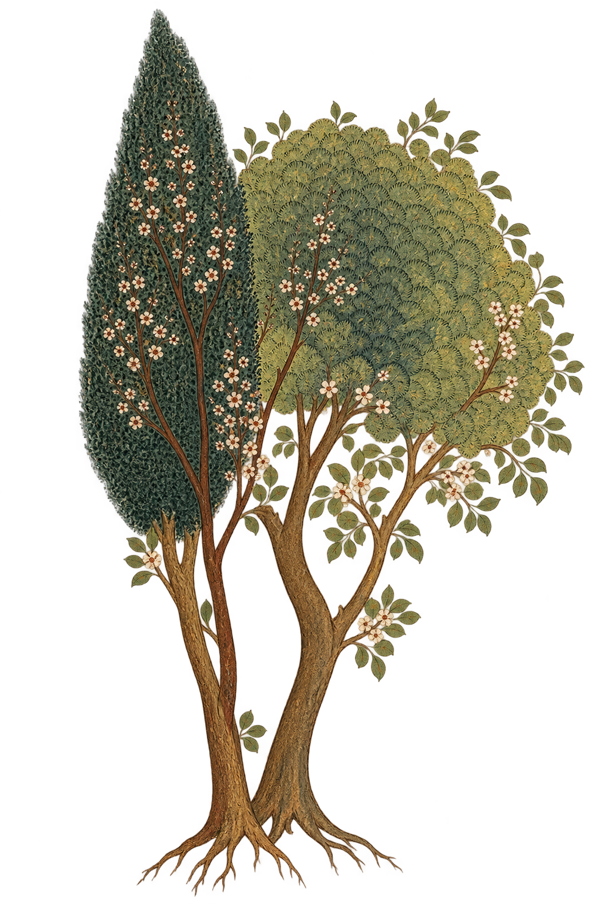
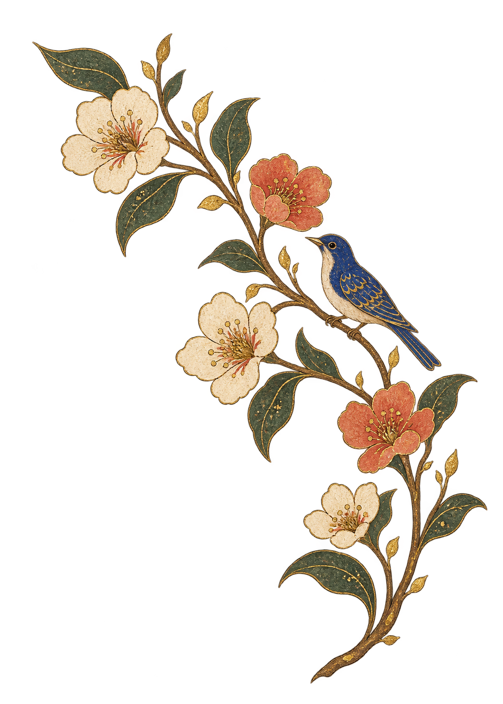

ENGINEERING / McMASTER ENGINEER 1P13
Robotic Baggage Delivery
From CAD to Python motor control: an airport baggage-transfer prototype.
PARNIA YAZDINIA
I’m a Software Engineering student at McMaster University. At BMO, I’m gaining experience with cloud systems, AWS, and software development.
As Technical Lead for McMaster’s Google Developer Student Club, I work with student developers to bring technical projects to life.
Beyond the screen: cafés, film photography, time with friends, and Persian poetry.

01 / SELECTED WORK
From cloud infrastructure to software
that makes sound visible.
Microphone audio becomes a living 3D animation through real-time pitch and onset detection.
C# / ASP.NET Core / Three.jsAn experimental camera-based pulse estimator, exploring subtle colour changes in facial video.
C# / Signal processing / FFTA home asset manager for tracking warranties, maintenance, receipts, and reminders.
Java / Spring Boot / PostgreSQLAn interactive simulation of charged particles moving through electromagnetic fields.
C++ / OpenGL / GLSL
ENGINEERING / McMASTER ENGINEER 1P13
From CAD to Python motor control: an airport baggage-transfer prototype.



ACCESSIBLE DESIGN / McMASTER DESIGN LEAGUE
A modular prep tray designed for people with dual sensory impairments.
A LITTLE ROOM FOR PLAY
03 / LET’S CONNECT
I’d love to hear about it.
pari.yazdinia@gmail.com ↗